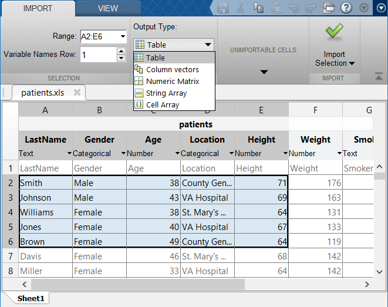

Import Spreadsheets
Spreadsheets, such as Microsoft® Excel® files, often contain a mix of numeric and text data as well as variable and row names. While the most common way to represent spreadsheet data in MATLAB® is by using a table, you can also represent spreadsheet data in MATLAB as timetables, matrices, or cell arrays.
Import data from spreadsheets either programmatically or interactively. Import programmatically using tailored importing functions, and further control how your data is imported using import options. Import interactively by using the Import Tool.
Import Data as Tables
You can import spreadsheet data as a table. A table consists of column-oriented variables, each containing data of the same type. Variables in a table can hold different data types and sizes, but each variable must have the same number of rows. For more information about tables, see Create Tables and Assign Data to Them.
Import tabular data from a spreadsheet into a table using the readtable function. For example,
create a table from the sample file patients.xls. Display the
first five rows and columns of the table.
T = readtable("patients.xls");
T(1:5,1:5)
ans =
5×5 table
LastName Gender Age Location Height
____________ __________ ___ _____________________________ ______
{'Smith' } {'Male' } 38 {'County General Hospital' } 71
{'Johnson' } {'Male' } 43 {'VA Hospital' } 69
{'Williams'} {'Female'} 38 {'St. Mary's Medical Center'} 64
{'Jones' } {'Female'} 40 {'VA Hospital' } 67
{'Brown' } {'Female'} 49 {'County General Hospital' } 64 Import Data as Timetables
If the rows of your spreadsheet are associated with times, you can import the data as a timetable. Like tables, timetables allow you to store tabular data variables that can have different data types and sizes as long as they have the same number of rows. In addition, a timetable provides time-specific functions to align, combine, and perform calculations with time-stamped data in one or more timetables. For more information about timetables, see Create Timetables.
Import tabular data from a spreadsheet into a timetable using the readtimetable function. For example, create a timetable from the
sample file sample.xls. Display the first five rows and columns
of the timetable.
TT = readtimetable("sample.xls");
TT(1:5,1:5)ans =
5×5 timetable
OutageTime Region Loss Customers RestorationTime Cause
________________ _____________ ______ __________ ________________ ___________________
2002-02-01 12:18 {'SouthWest'} 458.98 1.8202e+06 2002-02-07 16:50 {'winter storm' }
2003-01-23 00:49 {'SouthEast'} 530.14 2.1204e+05 NaT {'winter storm' }
2003-02-07 21:15 {'SouthEast'} 289.4 1.4294e+05 2003-02-17 08:14 {'winter storm' }
2004-04-06 05:44 {'West' } 434.81 3.4037e+05 2004-04-06 06:10 {'equipment fault'}
2002-03-16 06:18 {'MidWest' } 186.44 2.1275e+05 2002-03-18 23:23 {'severe storm' }
Import Data as Matrices
If your spreadsheet file contains uniform data (all of the same type), you can import the data as a matrix. Importing your data into a matrix allows you to work with a minimally formatted array.
Import uniform data from a spreadsheet file into a matrix using readmatrix. For example, create a matrix from the sample file
basic_matrix.xls.
M = readmatrix("basic_matrix.xls")
M = 5×4
6 8 3 1
5 4 7 3
1 6 7 10
4 2 8 2
2 7 5 9Import Data as Cell Arrays
A cell array is a data type with indexed data containers called cells, where each cell can contain any type of data. Cell arrays commonly contain either lists of text, combinations of text and numbers, or numeric arrays of different sizes.
Import nonuniform data (data of mixed types) from a spreadsheet into a cell array
using readcell. For example, create a cell array from the nonuniform data
in
basic_cell.xls.
C = readcell("basic_cell.xls")C = 3×3 cell array
{[ 1]} {[ 2]} {[ 3]}
{'hello' } {'world'} {[ NaN]}
{[10-Oct-2018 10:27:56]} {[ 1]} {1x1 missing}Import Data with Import Options for Additional Control
Importing spreadsheet data sometimes requires additional control over the import
process. To customize the import process, you can create an import options object.
The object has properties that you can adjust based on your import needs. For
example, you can change the data types of variables or import only a subset of
variables. For more information about import options, see detectImportOptions.
Import Data Interactively
You can import data interactively into a table or other data type using the Import Tool.
To open the Import Tool, on the Home tab, in the
Variable section, click Import Data
 . Then, select the file you want to import.
Alternatively, right-click the name of the file in the Files panel and select
Import Data. Using the Import Tool window, set
the import options and then click Import Selection
. Then, select the file you want to import.
Alternatively, right-click the name of the file in the Files panel and select
Import Data. Using the Import Tool window, set
the import options and then click Import Selection
 to import the data into MATLAB. For more information, see Read Spreadsheet Data Using Import Tool.
to import the data into MATLAB. For more information, see Read Spreadsheet Data Using Import Tool.
For example, create a table from the sample spreadsheet file
patients.xls. Open the file in the Import Tool and
select options such as the range of data and the output type. Then, click
Import Selection
 to import the data as a table in the MATLAB workspace.
to import the data as a table in the MATLAB workspace.
